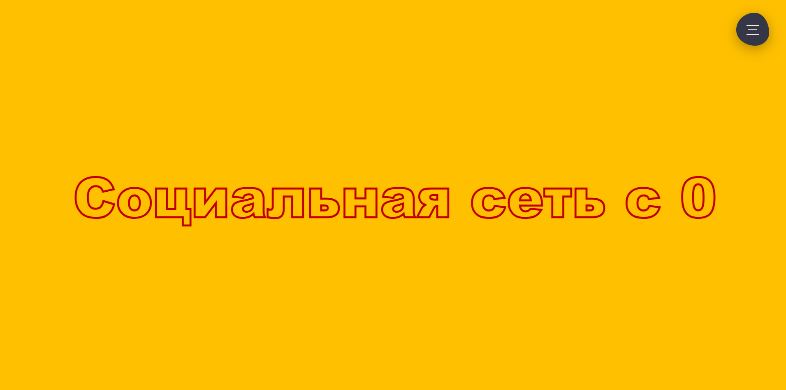
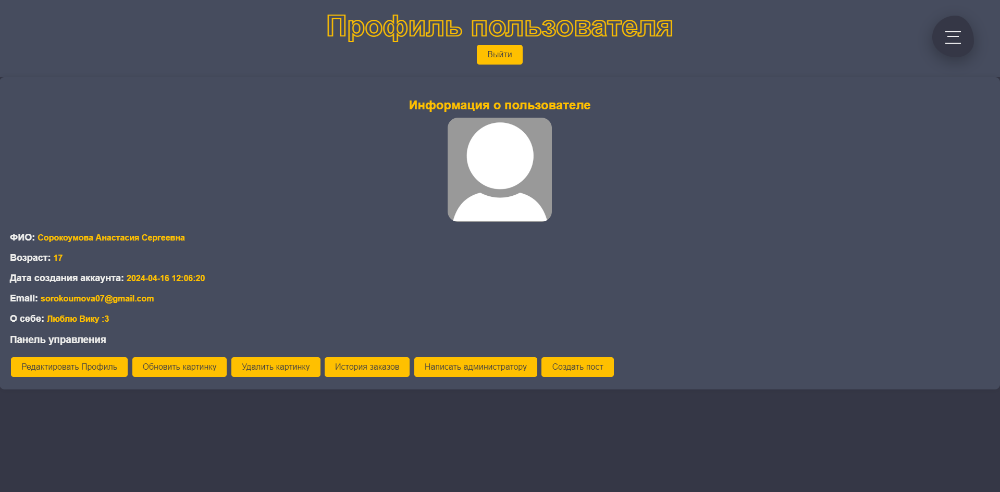
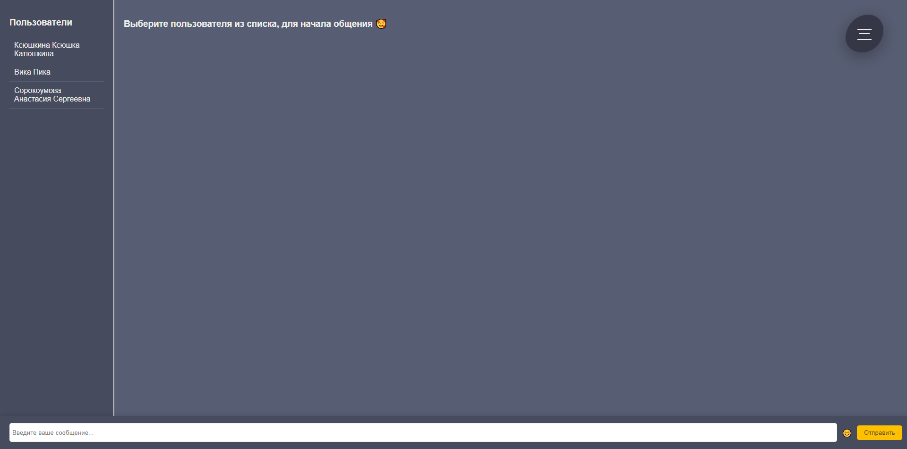
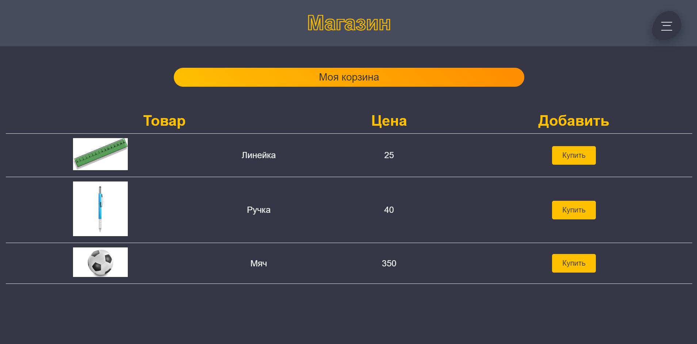
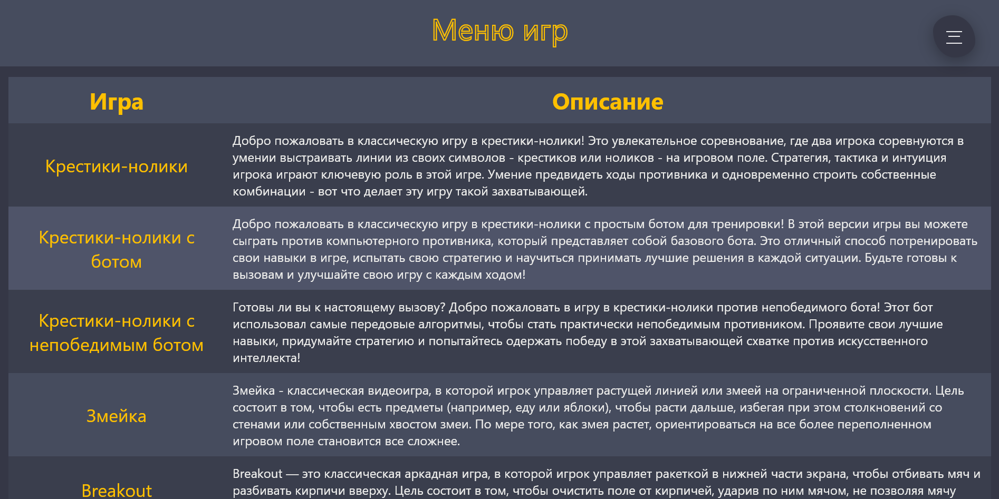

Добро пожаловать в новую социальную сеть!

Все мы стремимся к самовыражению, поэтому в социальной сети вы сможете загружать свои картинки в профиль

Какая же социальная сеть без общения? Здесь вы сможете общаться абсолютно с каждым

Одной из особенностей этой социальной сети является наличие встроенного магазина

Если вы устали на работе и захотите расслабиться и развлечься, то в социальной сети предусмотрено несколько классических игр